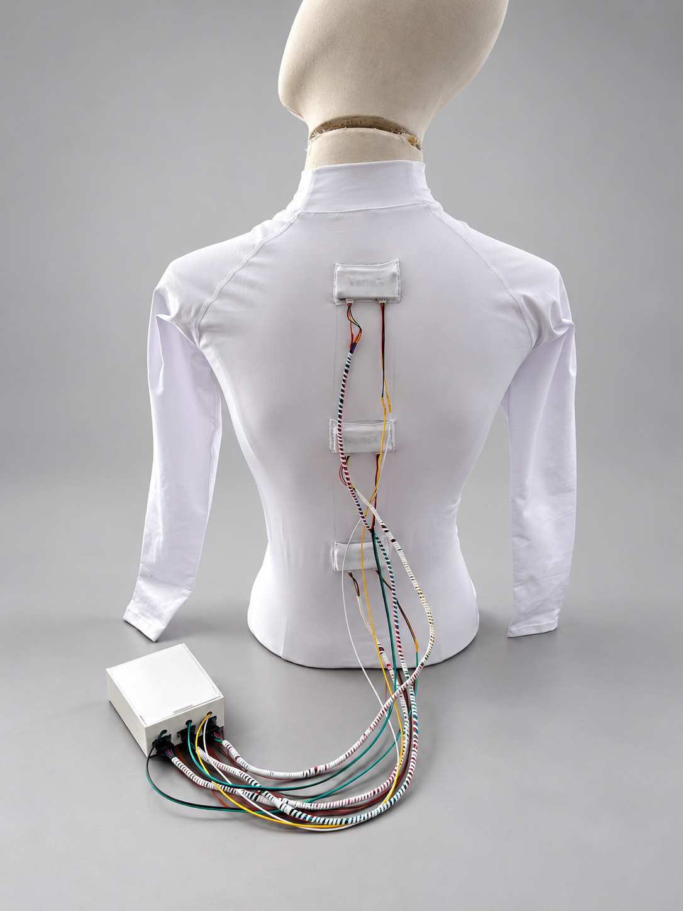
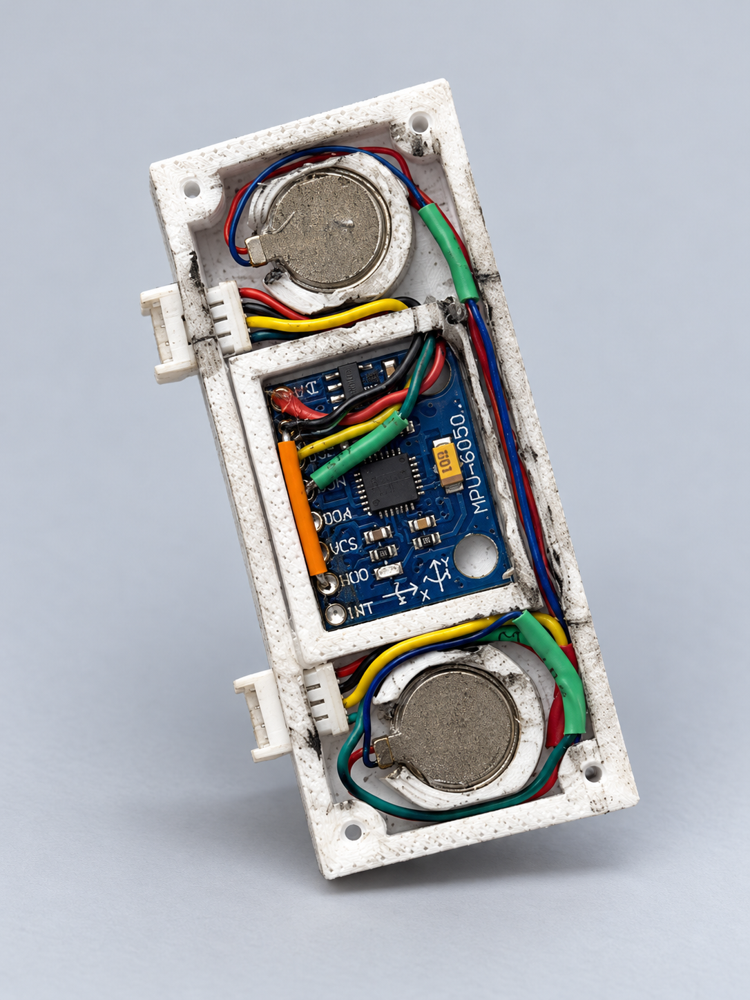

Нет непрерывной картины
Периодические наблюдения не показывают частоту, продолжительность и время эпизодов.
VerteX измеряет положение трёх отделов спины, фиксирует эпизоды отклонений и помогает пользователю вовремя вернуться к откалиброванной позе.

01Собранное устройствоESP32 и три MPU6050
02Проверяемая методикаТри этапа по 15 минут
03Честный статусНе является медицинским изделием
Во время учёбы человек может постепенно менять положение тела и не замечать этого. Разовый осмотр не показывает, что происходило в течение всего дня.
Периодические наблюдения не показывают частоту, продолжительность и время эпизодов.
Пользователь замечает неправильное положение уже после того, как долго в нём находился.
Без количественных данных невозможно объективно сравнивать дни и оценивать изменения привычки.
Датчики сравнивают текущее положение с персональной калибровкой. Если отклонение превышает установленный порог дольше одной секунды, система регистрирует событие и включает обратную связь.
Персонализированная обратная связь снижает частоту и продолжительность отклонений от оптимального положения тела.
LED скрыт, регистрируется исходное поведение.
LED виден и включается при подтверждённом отклонении.
LED снова скрыт, оценивается сохранение привычки.
Перед публикацией внесите сюда окончательные средние значения из протокола. Дашборд ниже использует только демонстрационные данные.

Фотография рабочего прототипаТекущая версия подтверждает работу датчиков, алгоритма отклонений и световой обратной связи. Следующая итерация сосредоточена на компактности, автономности и удобстве.
Модель предназначена для проверки в будущих пилотах и не выдаётся за уже действующий клинический сервис.
Клиники и школы получают устройства с инструкцией, калибровкой и обслуживанием.
Доступ к динамике, эпизодам отклонений и выгрузке отчётов по сеансам.
Ограниченное тестирование с согласиями, протоколом безопасности и измеримыми критериями.
Выбранная модель Groq проанализирует показатели текущего сеанса. Источник данных — устройство или демо — будет указан в отчёте. При нажатии кнопки эти показатели будут отправлены Groq.
Ключ хранится только в памяти этой страницы и очищается при выходе или перезагрузке. Запросы идут напрямую в Groq.
Модель не подключена. Доступность зависит от модели и лимитов аккаунта Groq.
Настройки трёх модулей и вибрационных напоминаний.
Подключите VerteX кнопкой «Подключить BLE» ниже. Прошейте ESP32 файлом VerteX_BLE из комплекта.
Подтверждённых настроек пока нет.
Для подключения используйте Chrome на Windows или Android и HTTPS. На iPhone прямое подключение из Chrome недоступно.
Локальное интерактивное демо. Оно не подключено к медицинской системе.
Все три зоны находятся в пределах порога.
Начните демонстрационный сеанс. Рекомендация будет обновляться по измеренным показателям.
| Время | Зона | Пиковый угол | Длительность | Результат |
|---|---|---|---|---|
| Событий пока нет | ||||